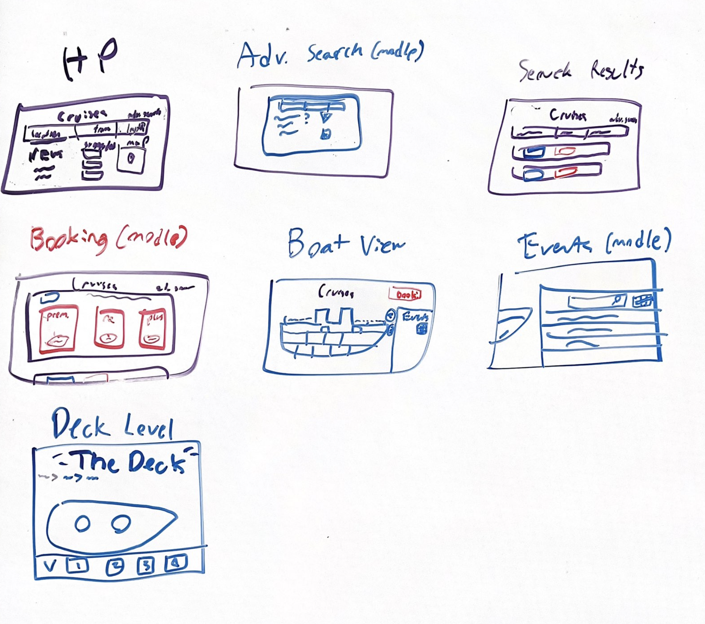

I decided to join my friend Charles Moloney in working to develop a great user interface for our UI Design class. At first, we
didn’t really know what type of user interface to design. We threw around a few ideas, but we weren’t having any luck. I
had been sitting on an idea for a cruise vacation aggregator like Google Flights, and we eventually decided to work on
that. We worked very closely with each other, with few discrete responsibilities only belonging to one person. Charles
has more experience with the more in-depth Figma things like component libraries, so he leaned into that aspect a little
more, but the project is a product of mutual input and creativity. Nearly every aspect of the project is a result of us
meeting in-person in a study room and just hammering it out while discussing potential ideas and any problems that we
might come across.
Before going all in on our cruise aggregator site, we looked at some existing competing products. We were happy to see
that a smooth, approachable UI like that of Google Flights was very, very far from existing multi-line cruise booking
solutions. Existing solutions are either very densely-designed and full of textboxes or had a used-car-dealship type
vibe that felt sleazy and dishonest. I have used Google Flights quite often to browse for and compare flights, and we
felt that a similar, fluid solution would be a great addition to the marketplace. Prospective cruise customers likely
driven off by competing UI’s unapproachableness or sleaziness could find safe haven in a more honest, simple solution.
Our target device type is web for desktop (with some mobile functionality), which is also the primary means of accessing
the Google Flights website. This is the best choice for our design because a cruise purchase is a big deal for people,
one best made outside of the more casual mobile environment.
We wrote a couple of user stories to gain further insight into the product. One story we wrote to help inspire our
design outlines a similar situation to one I faced personally. A college student faces an upcoming break in his
coursework and would like to take advantage of the spare time to go on a relaxing, economical vacation.
After deciding on our product and stories, we began to sketch out some ideas. The following is what we were able to come
up with at this early stage in the project:

After our first iteration, we created a design system for continuing prototypes. We had to make various important
decisions for what to include and leave out of our design system, as our choices would likely be reflected throughout
the entire prototypes that we would be building. One important choice that we made was that of fonts and font sizing. We
had a few components in mind for our pages, such as an individual cruise info tab, and we designed our font sizings to
match what looked nice in individual components. This left us with some larger and smaller fonts sizes that got the job
done initially.
Another choice we made was surrounding the color scheme and logo for the project. We threw around a few different ideas,
like a white background or red coloring, and we used some AI-generated images to help us ideate on color and logos.
Eventually, ChatGPT spit out a really cool minimalist logo with a cruise ship with a dark blue background and lighter
colored waves. Not only did we decide to modify and use the logo, we also adopted the colors generated (with some minor
alterations).
Another crucial aspect of the design system was our component to display an individual cruise (which eventually evolved
into our generic text box with a border). We looked at some other cruise listings and the most important information to
our prospective users. We made a box (defined by a bright border) that contained all the information necessary for a
single cruise and a button to go to the page for that individual cruise option.
One final choice that we made for the design system was our method for letting users go back or return to various previous pages. We initially considered using a hamburger menu with different items, but we realized that the function of the website can be simplified enough to be navicable with only a breadcrumb menu. Since this adds to the minimalism and overall flow, we decided to implement it.
We created an initial prototype based on the design system, and below will be an embed of it and a walkthrough for navigating it.
First, start at the Home Page. You’ll be able to press the play button to see the prototype function with many buttons
functioning as you might expect. You can "search" for vacations in the Bahamas, and see search results. You can click on the results to view more information about it and learn more about the itinerary and features, with a button to book the cruise. You are able to use breadcrumbs to navigate back to previous pages. There is also an advanced search page, but this iteration had the same search results as the non-advanced search.
After completing the initial prototype, we performed a colleague assessment of it. That involved identifying various
issues, organizing them, assigning importances and effort-required to those issues, and finally choosing what issues to
fix.
After talking with my colleague, we found some really important areas for improvement and areas where we were doing
well. The prototype’s strengths were definitely its minimalism and navigability. However, the overall purpose of the
site was unclear on the home page, and some of our designs got a little “hard on the eyes” due to their contrast and
border sizes. We decided to adjust border sizes on our text boxes and font size within those text boxes to make each
component less crowded. These changes seemed to succeed in making the prototype less hard on the eyes and easier to
interact with.
After the colleague assessment, we performed more formal user tests. Our user testers involved people who fit the
characters in our stories; college students and people with a passing interest in engineering. We made a script that we
ran through with the user and got their consent to get relevant information for the test, then we let them mess around
with the home page for a bit. Finally, we gave them a specific task (book a cruise on a certain date) and let them do it
at their own pace.
Some themes from our user tests include a lack of necessary booking information (like the cruise line of a specific
ship), some confusing function overlap, and general trustworthiness but lacking forthcomingness. Here’s a list of some
specific issues we committed to changing and the actual changes we ended up making:
The results of advanced searches didn’t display that they came from an advanced search, it seemed like they just were a
regular search. Our solution was to make results of advanced searches more explicit by having custom search box tokens
(like a $ symbol), similar to the results of an advanced Google search.
There was still too much eye strain on some pages. The ease of use and visibility of the pages this affected was very
important to us, so we needed to address it. We chose to make the borders even less visible, reduce eye strain even
more.
The font looked unprofessional. Since one of our core values of the project is respect, we wanted to emphasize this
value in every aspect of the project, including the font. We switched up the font in a few key areas.
The search glass icon didn’t actually go to the search page. This is a minor but important feature that should be
included even in basic websites, so we needed to fix it immediately. We added that functionality.
The advanced search options were unclear which were being active and which were not. The autonomy of users was very
important to us, and even though that power was being provided to users, unclear design was taking the full
functionality away from users. We changed up our design system a bit to better reflect which filters were being used.
Our two core values for our UI are honesty and respect. We believe that these values have been adhered to in every aspect of our design. Our minimalist but forthcoming pages don’t try and lure in users with deals and fake discounts. We give users true and complete information about cruises, including honest thoughts, to give them a full picture of what cruises they might want to book and which they might want to stay away from. The colors and logo are calming (or at the very least non-aggressive) and reflect our site’s only purpose, helping people find their perfect cruise. Our UI doesn’t waste user time, and it gives them freedom to make their right choice in cruising